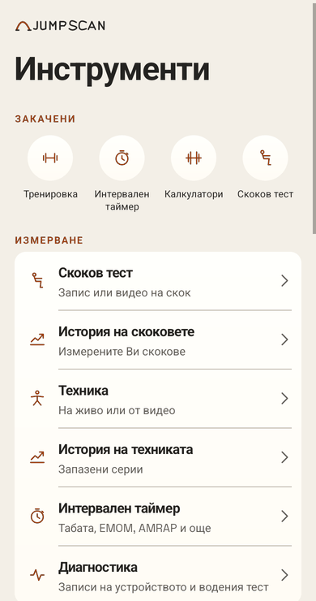
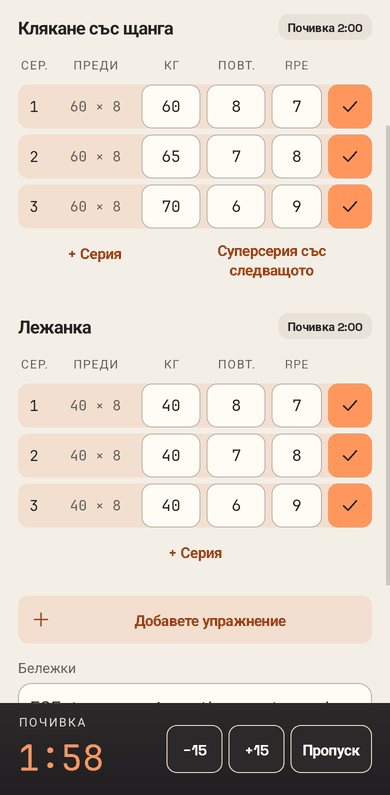
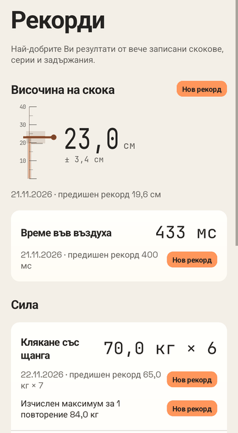
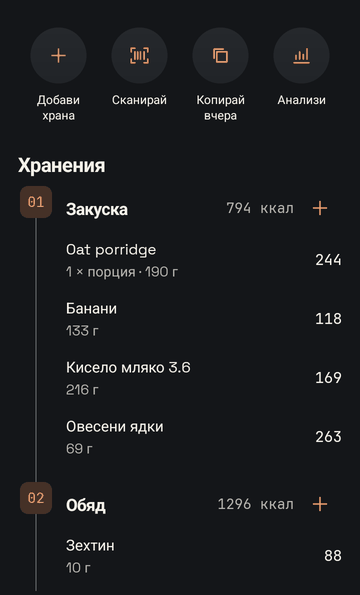
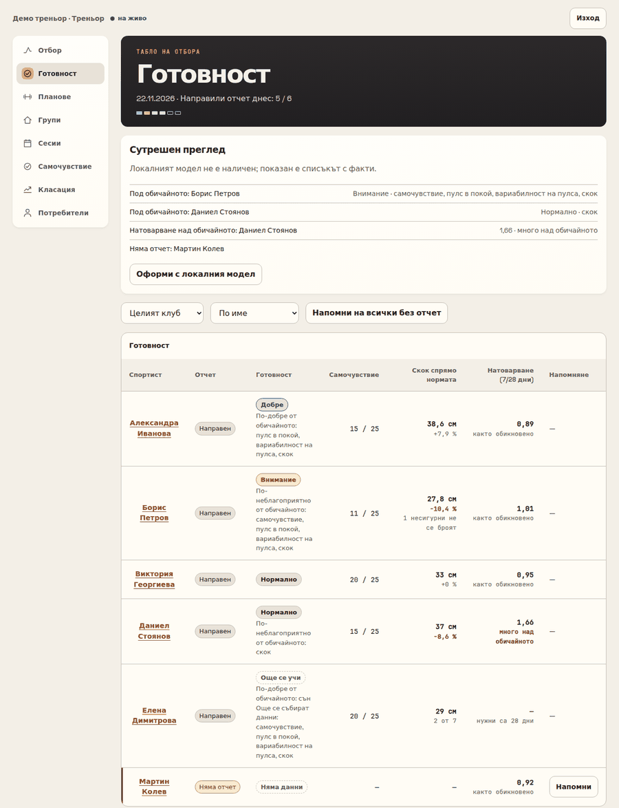
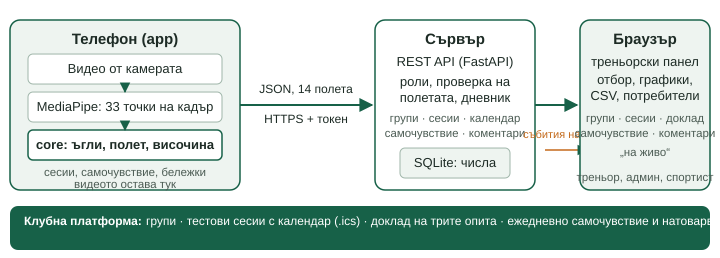

Демо
Един скок: от клипа до треньорския панел


Национален есенен турнир „Джон Атанасов“ · Разпределени приложения
Фитнес инструменти за спортиста и треньора с общ клубен сървър. Начело: скок, измерен с един телефон.
64 от 91 скока отпред получават число без предупреждение и нито едно не е грешно.
Отстрани: 58 верни и 2 грешни. Срещу силова платформа, девет души, всеки проверен с модел, който не го е виждал.
Проблемът
Маркери и силови платформи: точно, но скъпо и със специалист.
Треньорът гледа на око; тренировки, хранене и самочувствие са в различни приложения или на хартия.
Заснемането на непълнолетни и качването му някъде е риск за поверителността.
Въпросът: може ли телефонът, който всеки вече има, да даде числа, които клубът следи във времето?
2Основният инструмент
Клип от 10 секунди, телефонът на височината на коленете.
Позата, ъглите, времето на полет и височината се смятат на самия телефон.
Към сървъра отиват числата, не видеото. Треньорът вижда историята спрямо базовата стойност.
Видеото никога не напуска телефона. Няма поле за видео, снимка или точки от позата.
3Набор инструменти

Всеки инструмент работи и сам; общи са акаунтът, правата, опашката за офлайн изпращане и потокът от събития.
4Тренировка


Хранене

Числата са за обсъждане с треньора, не са предписание.
6Готовност и натоварване

Таблото на треньора: напомняне до спортистите без отчет и сутрешен преглед. Информация, не медицински съвет.
7Архитектура

Администратор — всички клубове, потребители, дневник
Треньор — само своя клуб
Спортист — само своите данни
Как се смята
θ = ъгълът между бедрото и подбедрицата от триизмерните точки на модела. Прав крак е 0°.
h = g · t² / 8
Времето t е от първия кадър във въздуха до първия кадър на земята. Половината полет тялото се издига, половината пада: h = ½·g·(t/2)².
t = 360 ms → h ≈ 15,9 cm
Демо
Точност
| Девет души, 91 скока на изглед | Отпред | Отстрани |
|---|---|---|
| Верни числа без предупреждение | 64 | 58 |
| Грешни числа без предупреждение | 0 | 2 |
| С предупреждение → проверка на кадрите | 7 | 0 |
| Предложени кадри | 20 | 25 |
| Грешка в ъгъла (RMSE) | 17° | 10° |
Еталон: силова платформа и лабораторна кинематика, набор на Университета в Твенте (CC BY 4.0).
Всеки човек е проверен с модел, който не го е виждал. „Грешно“ = отместено с повече от два кадъра.
Затова числата са за сравнение на спортиста със самия него, не за диагноза.
Техника: клекове — 21 от 22 отделени серии точно (12 души); планк — време в 9 от 9. Другите 18 упражнения: „Експериментални“.
Поверителност, сигурност, AI
Резултат и развитие
сървърни теста (1 пропуснат) · 23.11.2026 г.
теста на ядрото (1 пропуснат) · 22.11.2026 г.
двата набора при всяко качване в Git
Скорост и батерия на реален телефон, работа с изключен екран, истински клуб.
Още инструменти с камерата (обхват на движение, баланс, спринт) — в разработка.
jumpscan.stormlabs.cloud · код: [АДРЕС НА ХРАНИЛИЩЕТО] · GPL-3.0
13